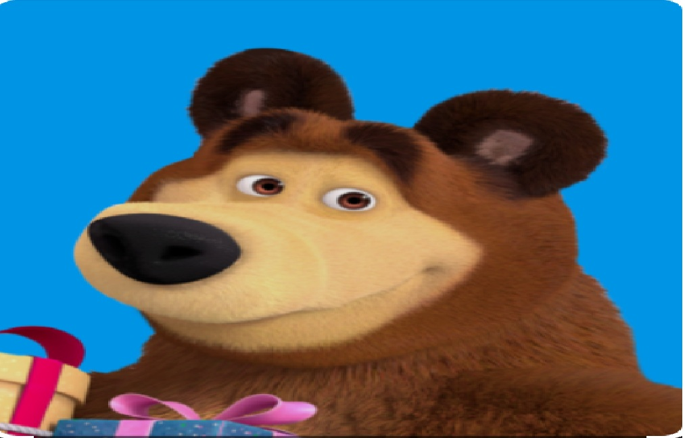

Bu ertak sho'x va tirishqoq qizaloq Masha hamda o'rmon chetida tinch yashaydigan sobiq sirk ayig'i haqida. Masha tasodifan Ayiqning uyiga kirib qoladi va uni ag'dar-to'ntar qilib yuboradi. Ammo vaqt o'tib, ular bir-birining kamchiligiga chidab, chin do'st bo'lib qoladi.
